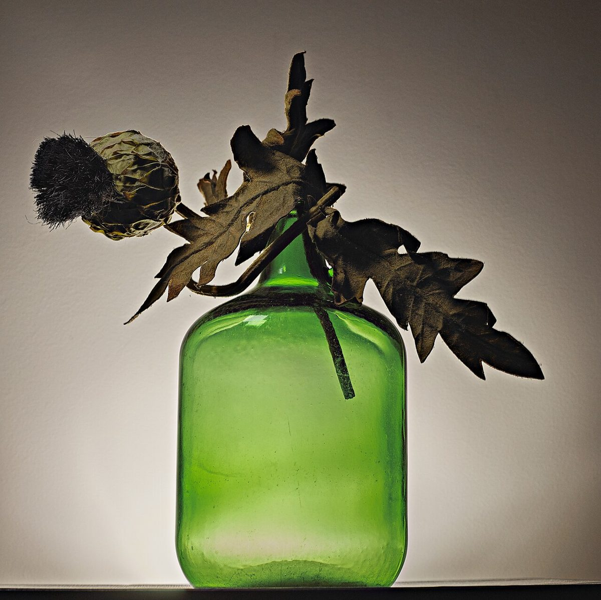
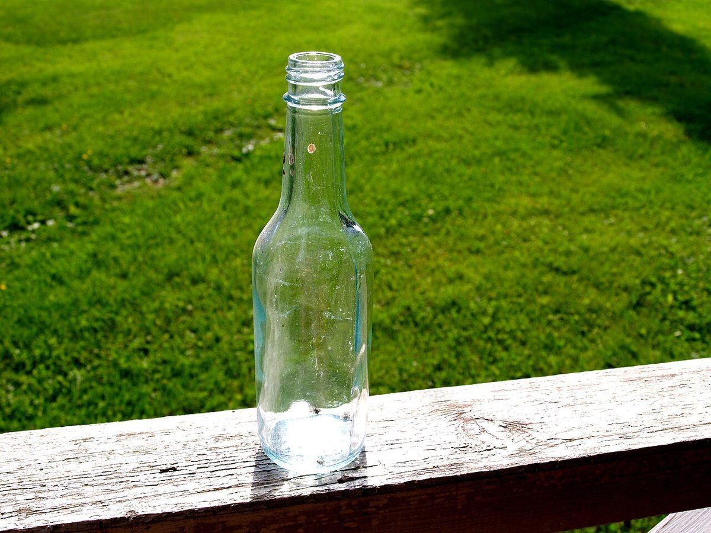

店のこと
店のこと
お店について確認できているのは、所在地とInstagramのアカウントだけです。
「想像してみる」部分は制作側が想像して書いたもので、お店の実際の様子・考え・メニューとは関係ありません。
確認できていること
- 店名は「smile aid trunk」、業種はカフェ
- 所在地は沖縄県島尻郡久米島町比嘉99-11(〒901-3108)
- 電話番号はなし。連絡はInstagramから
- 営業時間・定休日・メニュー・価格・ご予約・駐車場は準備中

想像してみる
屋号の三つの単語から
- smile笑顔。ふっと緩む口もとを連想しました。
- aid手助け・応急の助け。疲れたときの一息を連想しました。
- trunk大きな収納箱、または木の幹。しっかり根を張るものを連想しました。
ただし由来は分かりません。上の連想は、あくまで制作側がページを組み立てるために考えたものです。



町のこと
久米島町について
久米島町は沖縄県島尻郡にある町です。ただし、お店と島の風景や自然との関わりについては分かりません。ここでは住所をお知らせするにとどめます。